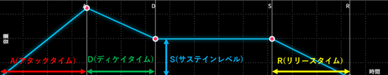

ADSRエンベロープについて
ADSRエンベロープとは、音を時間的に変化させるものです。 ADSRそれぞれに意味があります。
①A(アタックタイム)
②D(ディケイタイム)
③S(サステインレベル)
④R(リリースタイム)
A(アタックタイム)
これは音が鳴り始めてから、最高音に達するまでの時間のことです。
D(ディケイタイム)
これは音が最高音になってから、S(サステインレベル)の音量まで小さくなるまでの時間のことをいいます。
S(サステインレベル)
ADRはそれぞれ時間を表しますが、S(サステインレベル)は、時間でなく音量を表すということに注意が必要です。
R(リリースタイム)
これはS(サステインレベル)から、音が完全に消えるまでの時間のことです。
例えば、ピアノを想像してみてください。 鍵盤から指を離しても、完全に音が消えるまで音が鳴っている時間があります。 それがR(リリースタイム)です。

シンセサイザでは、これらのパラメータを自由自在に操り、独自の音作りを楽しむことが可能です。
ADSRエンベロープ体験では、これらのパラメータを自由自在にグラフ上で動かし、音色の違いを体験することができます。
自分好みの音色を探してみよう。
ADSRエンベロープ体験へ